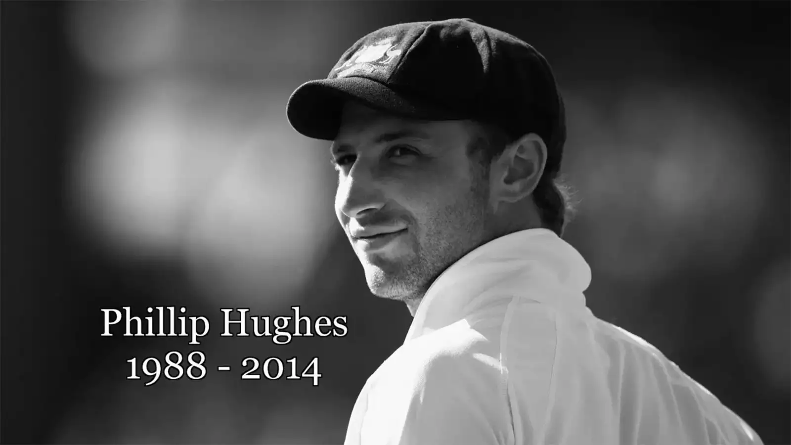

Phillip Hughes
Phillip Joel Hughes (1988–2014) was an Australian cricketer renowned for his left-handed opening batting. Born on November 30, 1988, in Macksville, New South Wales, he quickly ascended the ranks of Australian cricket due to his exceptional talent and distinctive technique.